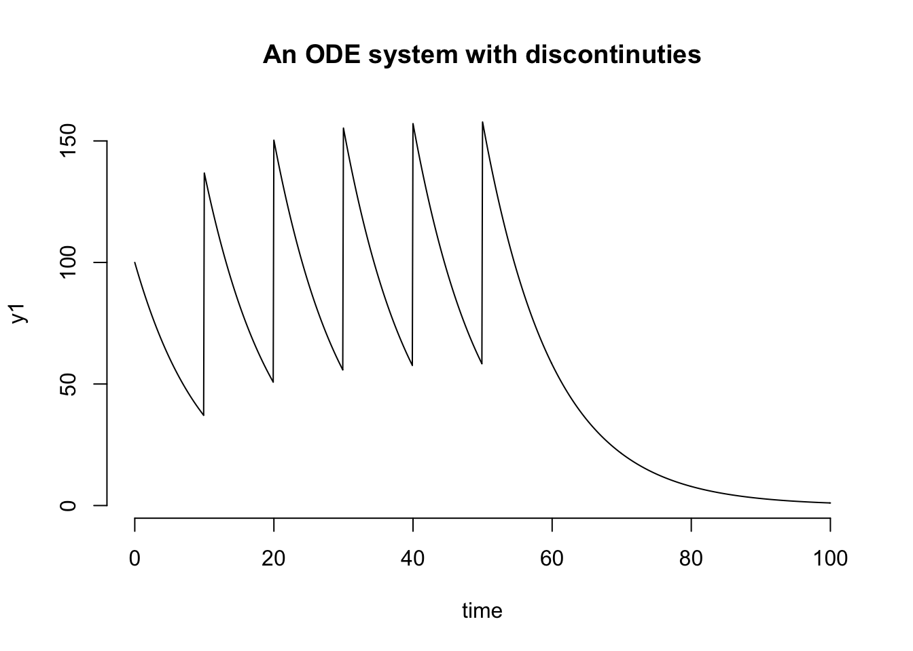

vignettes/my-vignette.Rmd
my-vignette.RmdOrdinary Differential Equations (ODEs) describe the rate of change of dependent variables with respect to a single independent variable and are used in many fields to model behavior of the system. There are many good C libraries available to solve (i.e., integrate systems of ODEs) and SUNDIALS available from the Lawrence Livermore National Laboratory is a one of the most popular and well-respected C library for solving non-stiff and stiff systems of ODEs.
Currently, this package provides an interface to the CVODE and CVODES function (serial version) in the library which is used to solve ODEs (or Initial Value Problems) and calculate sensitivities.
The four exported functions from the package are:
cvode - An interface to the CVODE function in SUNDIALS to solve a system of ODEs.
cvodes - An interface to the CVODES function in SUNDIALS to calculate forward sensitivites with respect to parameters of the ODE system.
ida - An interface to the IDA function in SUNDIALS to solve a system of Differential-Algebraic Equations (DAEs).
cvsolve - A convenient interface to solve a system of ODEs with discontinuities in solution.
In future, we plan to provide interface for the other solvers (i.e., IDA/IDAS and ARCODE in the library also. Right now, this package serves as a test case for providing an interface to the SUNDIALS library for R users.
One of the advantage of using this package is that all the source code of the SUNDIALS library is bundled with the package itself, so it does not require the SUNDIALS library to be installed on the machine separately (which is sometimes non trivial on a Windows machine).
As described in the link above, the problem is from chemical kinetics, and consists of the following three rate equations:
\[ \begin{aligned} \frac{dy_1}{dt} &= -.04 \times y_1 + 10^4 \times y_2 \times y_3 \\ \frac{dy_2}{dt} &= .04 \times y_1 - 10^4 \times y_2 \times y_3 - 3 \times 10^7 \times y_2^2 \\ \frac{dy_3}{dt} &= 3 \times 10^7 \times y_2^2 \end{aligned} \]
with time interval from \(t = 0.0\) to \(t = 4 \times 10^{10}\) and initial conditions: \[ y_1 = 1.0 , ~y_2 = y_3 = 0 \]
The problem is stiff.
The original example , While integrating the system, also uses the rootfinding feature to find the points at which
\[ y_1 = 1 \times 10^{-4} \] or at which \[ y_3 = 0.01 \] but currently root-finding is not supported in this version. As in the original example, this package also solves the problem with the BDF method, Newton iteration with the SUNDENSE dense linear solver, however, without a user-supplied Jacobian routine (unlike the original example). The future versions may include an ability to provide Jacobian calculated analytically or via automatic differentiation. CVODE uses a scalar relative tolerance and a vector absolute tolerance (which can be provided as an input). Output is printed in decades from \(t = 0.4\) to \(t = 4 \times 10^{10}\) in this example.
Differential equations can be written as an R function or as an Rcpp function. Differential equations function must be written as
function(t, y, p){ # code to write differential equations # using parameter vector (p) and state/entity vector (y) # should return `ydot`, the vector representing # rate of change of entities in `y` # length of `ydot` must be equal to `y1 }
where t represents time, y is the vector describing the values of states/entities of the ODE system at time t and p is the vector of parameters used to define the ODEs. The output of this function is a vector of rate of change of entities of y.
The key aspect to keep in mind is that the signature of the function must be function(t,y,p). As an example, we try to solve the cv_Roberts_dns.c problem described above, the original code can be found here. An example of an R function is as follows:
ODE_R <- function(t, y, p){ ## initialize the derivative vector ydot <- vector(mode = "numeric", length = length(y)) ## p (parameter vector input) is [-0.04 1e04 3e07] ydot[1] = p[1]*y[1] + p[2]*y[2]*y[3] ydot[2] = -p[1]*y[1] - p[2]*y[2]*y[3] - p[3]*y[2]*y[2] ydot[3] = p[3]*y[2]*y[2] ydot ## return ydot }
where p is a parameter vector with the values [-0.04 1e04 3e07].
Also, since this package using Rcpp to bundle the C code, we can use the notation used in Rcpp to describe the system of ODEs. The cv_Roberts_dns problem describe above can be described in an Rcpp function as follows (indices in C++ start from 0, functions need to declare their return type, here NumericVector and every expression ends in a semicolon, ;) :
#include <Rcpp.h>
using namespace Rcpp;
// [[Rcpp::export]]
NumericVector ODE_Rcpp (double t, NumericVector y){
// Initialize ydot filled with zeros
NumericVector ydot(y.length());
// p (parameter vector) is [-0.04 1e04 3e07]
ydot[0] = p[0] * y[0] + p[1] * y[1] * y[2];
ydot[1] = -p[0]*y[0] - p[1]*y[1]*y[2] - p[2]*y[1]*y[1]
ydot[2] = p[2] * y[1] * y[1];
return ydot;
}The above is a re-write of the cvRoberts_dns.c example in the documentation of CVODE. The original example can be found the document here.
The entire R file to create right hand side of ODE function (which calculates rates of change) is as follows (also found here):
# ODEs described by an R function ODE_R <- function(t, y, p){ ## initialize the derivative vector ydot <- vector(mode = "numeric", length = length(y)) ## p (parameter vector) is [-0.04 1e04 3e07] ydot[1] = p[1]*y[1] + p[2]*y[2]*y[3] ydot[2] = -p[1]*y[1] - p[2]*y[2]*y[3] - p[3]*y[2]*y[2] ydot[3] = p[3]*y[2]*y[2] ydot ## return ydot } # ODEs can also be described using Rcpp Rcpp::sourceCpp(code = ' #include <Rcpp.h> using namespace Rcpp; // [[Rcpp::export]] NumericVector ODE_Rcpp (double t, NumericVector y){ // Initialize ydot filled with zeros NumericVector ydot(y.length()); // p (parameter vector) is [-0.04 1e04 3e07] ydot[0] = p[0] * y[0] + p[1] * y[1] * y[2]; ydot[1] = -p[0]*y[0] - p[1]*y[1]*y[2] - p[2]*y[1]*y[1] ydot[2] = p[2] * y[1] * y[1]; return ydot; }') # Generate time vector, IC and call cvode to solve the equations # R code to genrate time vector, IC and solve the equations time_vec <- c(0.0, 0.4, 4.0, 40.0, 4E2, 4E3, 4E4, 4E5, 4E6, 4E7, 4E8, 4E9, 4E10) IC <- c(1,0,0) params <- c(0.04, 10000, 30000000) reltol <- 1e-04 abstol <- c(1e-8,1e-14,1e-6) ## Solving the ODEs using cvode function df1 <- cvode(time_vec, IC, ODE_R , params, reltol, abstol) ## using R df2 <- cvode(time_vec, IC, ODE_Rcpp , params, reltol, abstol) ## using Rcpp ## Check that both solutions are identical # identical(df1, df2)
The final output is the df1 matrix in which first column is time, second, third and fourth column are the values of y1, y2 and y3 respectively.
> df1
[,1] [,2] [,3] [,4]
[1,] 0e+00 1.000000e+00 0.000000e+00 0.00000000
[2,] 4e-01 9.851641e-01 3.386242e-05 0.01480205
[3,] 4e+00 9.055097e-01 2.240338e-05 0.09446793
[4,] 4e+01 7.158016e-01 9.185043e-06 0.28418924
[5,] 4e+02 4.505209e-01 3.222826e-06 0.54947590
[6,] 4e+03 1.832217e-01 8.943516e-07 0.81677741
[7,] 4e+04 3.898091e-02 1.621669e-07 0.96101893
[8,] 4e+05 4.936971e-03 1.984450e-08 0.99506301
[9,] 4e+06 5.170103e-04 2.069098e-09 0.99948299
[10,] 4e+07 5.204927e-05 2.082078e-10 0.99994795
[11,] 4e+08 5.184946e-06 2.073989e-11 0.99999482
[12,] 4e+09 5.246212e-07 2.098486e-12 0.99999948
[13,] 4e+10 6.043000e-08 2.417200e-13 0.99999994An interface to the IDA solver is also provided to solve a system of Differential-Algebraic equations. A system of differential-algebraic equations is a system of equations containing both differential and algebraic equations and can be written as \[
F(\dot{x}(t), x(t), t) = 0
\] The equations for such a system are written in terms of residuals and require both the value of \(x_0\) and \(\dot{x}_0\) as the initial conditions. Writing the previously solved equations as a system of DAEs, we have, \[
\begin{aligned}
\dot{y}_1 &= -p_1y_1 + p_2y_2y_3 \\
\dot{y}_2 &= p_1y_1 - p_2y_2y_3 - p_3y_2^2 \\
1 &= y_1 + y_2 + y_3
\end{aligned}
\] The above system of DAEs can be written in terms of residuals as
\[ \begin{aligned} res_1 &= -p_1y_1 + p_2y_2y_3 - \dot{y}_1 \\ res_2 &= p_1y_1 - p_2y_2y_3 - p_3y_2^2 - \dot{y}_2\\ res_3 &= y_1 + y_2 + y_3 - 1 \end{aligned} \] Here is the complete code for solving this system of DAEs,
DAE_R <- function(t, y, ydot, p){ # vector containing the residuals res = vector(mode = "numeric", length = length(y)) # R indices start from 1 res[1] <- -0.04 * y[1] + 10000 * y[2] * y[3] - ydot[1] res[2] <- -res[1] - 30000000 * y[2] * y[2] - ydot[2] res[3] <- y[1] + y[2] + y[3] - 1.0 res } # R code to genrate time vector, IC and solve the equations time_vec <- c(0.0, 0.4, 4.0, 40.0, 4E2, 4E3, 4E4, 4E5, 4E6, 4E7, 4E8, 4E9, 4E10) IC <- c(1,0,0) # Initial value of y IRes <- c(-0.4, 0.4, 0) # Initial value of ydot params <- c(0.04, 10000, 30000000) reltol <- 1e-04 abstol <- c(1e-8,1e-14,1e-6) ## Solving the DAEs using the ida function df1 <- sundialr::ida(time_vec, IC, IRes, DAE_R , params, reltol, abstol)
The cvsolve function defined in sundialr package provides a convenience interface to solve ODEs with one or more discontinuities in solution. An example of such a system of ODEs would be pharmacokinetics of a drug with repeated bolus administration. Let’s look at a simple example of multiple doses of a drug with a first-order degradation administered intravenously. The ODE system for the drug is \[
\frac{dC}{dt} = -k_{el} * C
\] where \(C\) is the concentration of the drug and \(k_{el}\) is the elimination rate of the drug. The \(R\) code for such a system is
ODErepeated_R <- function(t, y, p){ # vector containing the right hand side gradients ydot = vector(mode = "numeric", length = length(y)) # R indices start from 1 ydot[1] = -p[1]*y[1] ydot }
We also need to define when the multiple doses are given and the state to which they are to be applied (here to be applied to the only state in the model, \(C\)). This is provided via the \(Events\) dataframe (here, \(TDOSE\) or the dosing dataframe).
TDOSE <- data.frame(ID = 1, TIMES = c(0, 10, 20, 30, 40, 50), VAL = 100) TDOSE #> ID TIMES VAL #> 1 1 0 100 #> 2 1 10 100 #> 3 1 20 100 #> 4 1 30 100 #> 5 1 40 100 #> 6 1 50 100
TDOSE is a data frame with the index of the state to which discontinuity is to be applied (represented by ID), the times at which the discontinuity is to be applied (represented by TIMES) at the value to be added to the value of the state at that time-point. A typical example would be addition of the dose amount to the value of the concentration at the specified times, e.g., the TDOSE data frame says that a value of 100 is to be added to the concentration of the 1st state (the only state in this system) at the times specified by the TIMES column. In summary,
ID represents the index of the state with discontinuity
TIMES represents the times at which discontinutiy is applied
VAL represents the value added to the value of the state at specified times.
The complete code for simulating such a system is
# Example of solving a set of ODEs with multiple discontinuities using cvsolve # A simple One dimensional equation, y = -0.1 * y # ODEs described by an R function ODE_R <- function(t, y, p){ # vector containing the right hand side gradients ydot = vector(mode = "numeric", length = length(y)) # R indices start from 1 ydot[1] = -p[1]*y[1] ydot } # R code to generate time vector, IC and solve the equations TSAMP <- seq(from = 0, to = 100, by = 0.1) # sampling time points IC <- c(1) params <- c(0.1) # A dataset describing the dosing at times at which additions to y[1] are to be done # Names of the columns don't matter, but they MUST be in the order of state index, # times and Values at discontinuity. TDOSE <- data.frame(ID = 1, TIMES = c(0, 10, 20, 30, 40, 50), VAL = 100) df1 <- sundialr::cvsolve(TSAMP, c(1), ODE_R, params) # solving without any discontinuity df2 <- sundialr::cvsolve(TSAMP, c(1), ODE_R, params, TDOSE) # solving with discontinuity ## Plot the solution with discontinuities ## first column is time, second column is the state time <- df2[,1] y1 <- df2[,2] plot(time, y1, type = "l", lty = 1, main = "An ODE system with discontinuties", frame.plot = F)

Note that in the example above, TSAMP is the sampling time at which the solution is desired. Also, even though an Initial Value of \(y_1\) of 1 is provided by the IC parameter, it is overwritten by the value of 100 provided in the TDOSE data frame. In general, the values in the initial conditions are overwritten by values in the Events input.
Sensitivity with respect to the parameters of the ODE system can be calculated using CVODES function. This package implements Forward Sensitivity Analysis from CVODES function (see the example cvRoberts_FSA_dns.c from the link here). Briefly, given the ODE system as described below
\[
\begin{aligned}
\frac{dy_1}{dt} &= -p_1y_1 + p_2y_2y_3 \\
\frac{dy_2}{dt} &= p_1y_1 - p_2y_2y_3 - p_3y_2^2 \\
\frac{dy_3}{dt} &= p_3y_2^2
\end{aligned}
\] with the same initial conditions as above (i.e., \(y_1 = 0, y_2 = y_3 = 0\)) and \(p_1 = 0.04, \quad p_2 = 10^4, \quad p_3 = 3\times10^7\). The system of Sensitivity equations (taken from cvs_guide.pdf) that is solved can be given by \[
\begin{aligned}
\frac{ds}{dt} =
\left[\begin{array}
{ccc}
-p_1 & p_2y_3 & p_2y_2 \\
p_1 & -p_2y_3-2p_3y_2 & -p_2y_2 \\
0 & 2p_3y_2 & 0
\end{array}\right]s_i + \frac{\partial f}{\partial p_i},
\quad s_i(t_0) =
\left[\begin{array} {c} 0 \\ 0 \\ 0 \end{array}\right], \quad i = 1, 2, 3
\end{aligned}
\] where \[
\frac{\partial f}{\partial p_1} = \left[\begin{array} {c} -y_1 \\ y_1 \\ 0 \end{array}\right],
\quad \frac{\partial f}{\partial p_2} = \left[\begin{array} {c} y_2y_3 \\ -y_2y_3 \\ 0 \end{array}\right],
\quad
\frac{\partial f}{\partial p_3} = \left[\begin{array} {c} 0 \\ -y_2^2 \\ y_2^2 \end{array}\right]
\] In the original CVODES interface from SUNDIALS, the sensitivity equations can either be provided by the user or can be calculated using numerical interpolation by the solver. Here, I have only included the numerical interpolation version and currently the user cannot specify the sensitivity equations. However, in the future versions I will provide an ability to specify user-defined Jacobian as well as user-defined sensitivity equations.
Also, currently, forward sensitivities are calculated with respect to all parameters of the system. I plan to provide in future, an ability to specify specific particular parameters for which sensitivity is desired. Currently, SIMULATENOUS and STAGGERED methods of sensitivity calculations from the SUNDIALS library are supported in this package.
CVODES
Once, the system of ODEs has been defined using the instructions provided above, sensitivities can be easily calculated using the cvodes function using the function call below (the entire code can be found at this link)
df1 <- cvodes(time_vec, IC, ODE_R , params, reltol, abstol,"STG",F) ## using R df2 <- cvodes(time_vec, IC, ODE_Rcpp , params, reltol, abstol,"STG",F) ## using Rcpp
The additional arguments in cvodes specify the senstivity calculation method to be used (STG for STAGGERED or SIM for SIMULATENOUS) and flag for error control (either T or F).
The output of cvodes is a matrix with number of rows equal to the length of the time vector (time_vec) and the number of columns being equal to length of (y \(\times\) p + 1). The first columns is for time. Currently, the sensitivity of every enitity is calculated with respect to every parameter in model. For example, for the current model with 3 entities (ODEs) and 3 parameters, a total of 9 sensitivities are calculated at each output time, i.e. y1 w.r.t p1, p2, p3, y2 w.r.t. p1, p2, p3 and so on. The first 3 (length(y)) columns give sensitivity w.r.t the first parameter, the next 3 (length(y)) columns give sensitivity w.r.t the second parameter and so on.
In the Sensitivity Matrix output for the systems of equations described above, the first column gives output time, the next 3 columns provide sensitivity of y1, y2 and y3 w.r.t first parameter (say p1), the next three columns provide sensitivity of y1, y2 and y3 w.r.t. the second parameter (p2) and so on. The output Sensitivity Matrix is given below. The sensitivity values match with the values provided in the CVODES documentation.
> df1
[,1] [,2] [,3] [,4] [,5] [,6] [,7] [,8] [,9] [,10]
[1,] 0e+00 0.000000e+00 0.000000e+00 0.000000e+00 0.000000e+00 0.000000e+00 0.000000e+00 0.000000e+00 0.000000e+00 0.000000e+00
[2,] 4e-01 -3.561085e-01 3.902252e-04 3.557183e-01 9.483149e-08 -2.132509e-10 -9.461823e-08 -1.573297e-11 -5.289692e-13 1.626194e-11
[3,] 4e+00 -1.876130e+00 1.792229e-04 1.875951e+00 2.961233e-06 -5.830758e-10 -2.960650e-06 -4.932970e-10 -2.762408e-13 4.935732e-10
[4,] 4e+01 -4.247395e+00 4.592812e-05 4.247349e+00 1.372964e-05 -2.357270e-10 -1.372941e-05 -2.288274e-09 -1.138015e-13 2.288387e-09
[5,] 4e+02 -5.958192e+00 3.545986e-06 5.958189e+00 2.273754e-05 -2.260807e-11 -2.273752e-05 -3.789554e-09 -4.994795e-14 3.789604e-09
[6,] 4e+03 -4.750132e+00 -5.991971e-06 4.750138e+00 1.880937e-05 2.312156e-11 -1.880939e-05 -3.134824e-09 -1.875976e-14 3.134843e-09
[7,] 4e+04 -1.574902e+00 -2.761679e-06 1.574905e+00 6.288404e-06 1.100645e-11 -6.288415e-06 -1.047876e-09 -4.536508e-15 1.047881e-09
[8,] 4e+05 -2.363168e-01 -4.584043e-07 2.363173e-01 9.450741e-07 1.832930e-12 -9.450760e-07 -1.574929e-10 -6.362045e-16 1.574935e-10
[9,] 4e+06 -2.566355e-02 -5.105587e-08 2.566361e-02 1.026491e-07 2.042044e-13 -1.026493e-07 -1.711080e-11 -6.851356e-17 1.711087e-11
[10,] 4e+07 -2.597859e-03 -5.190342e-09 2.597864e-03 1.039134e-08 2.076100e-14 -1.039136e-08 -1.732552e-12 -6.930923e-18 1.732559e-12
[11,] 4e+08 -2.601996e-04 -5.199259e-10 2.602002e-04 1.040802e-09 2.079717e-15 -1.040804e-09 -1.737821e-13 -6.951356e-19 1.737828e-13
[12,] 4e+09 -2.648142e-05 -5.616896e-11 2.648147e-05 1.059193e-10 2.246502e-16 -1.059195e-10 -1.804535e-14 -7.218146e-20 1.804542e-14
[13,] 4e+10 -2.899376e-06 -7.759920e-12 2.899383e-06 1.159764e-11 3.104024e-17 -1.159768e-11 -1.727574e-15 -6.910296e-21 1.727581e-15In future, I intend to provide options to select specific entities and parameters with respect to which sensitivities are to be computed as the sensitivity matrix can get very large for medium to large models.
The package sundialr provides a way to interface with the famous SUNDIALS C library (provided by Lawerence Livermore National Security) to solver initial value problems.
The package allows the system of differential equations to be written in R or using Rcpp. Function cvode is used to solve initial value problems with a single initialization, but problems with multiple discontinuities in the solution can be solved using the cvsolve interface.
For sensitivities, currently, calculation of forward sensitivities for all entities with respect to all the parameters in the model is implemented in the cvodes function. An ability to select specific entities and parameters for which sensitivities is to be calculated will be added soon.
To solve a system of differential algebraic systems, the ida function is provided which is an interface to the IDA function in SUNDIALS.
As a note, since this package is under active development, the interfaces of both CVODE and CVODES (i.e., the function signatures) may change in the future versions. Please keep this mind if you intend to use sundialr in your applications. In near future, interface for other solvers from the C library such asIDAS and ARKODE may also be added.